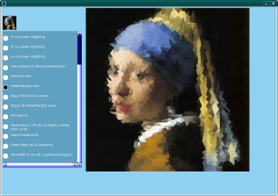

| Note that there are much better
algorithms for doing high-quality interpolation than any of these
methods. The real purpose of this demo is to give a visual "feel" for
the differences between several learning algorithms. The tiny image in the top-left is the training set. Each algorithm has two inputs (x, y) and one output (grayscale value). The big images are produced by evaluating with sub-pixel inputs. The four algorithms on the bottom are fast enough that the interpolation is performed entirely before this screen appears. The six algorithms on the top all use the same neural net model, but use different search algorithms to train it. You can watch in real time while they train. They each take turns so that each algorithm gets the same amount of time in the long run. As you'll see, on-line backpropagation beats the other algorithms. Momentum Greedy comes in second. The others are painfully slow. I'm a bit uncertain if my Partical Swarm implementation is correct, because I'm told it is an effective way to train a neural net, but it doesn't seem to work so well for me. |
 |